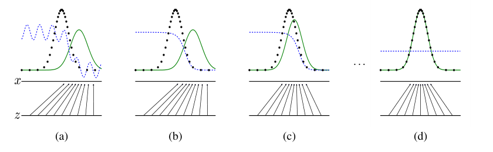
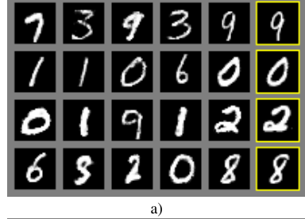

GANs train a loss their optimality proof leaves out
The optimum at p_g = p_data is a real theorem about function-space minimax, and the loss Algorithm 1 actually descends is the one later work shows yields an unstable, infinite-variance gradient.
Generative Adversarial Nets
Read the paperWe propose a new framework for estimating generative models via an adversarial process, in which we simultaneously train two models: a generative model G that captures the data distribution, and a discriminative model D that estimates the probability that a sample came from the training data rather than G. The training procedure for G is to maximize the probability of D making a mistake. This framework corresponds to a minimax two-player game. In the space of arbitrary functions G and D, a unique solution exists, with G recovering the training data distribution and D equal to 1/2 everywhere. In the case where G and D are defined by multilayer perceptrons, the entire system can be trained with backpropagation. There is no need for any Markov chains or unrolled approximate inference networks during either training or generation of samples. Experiments demonstrate the potential of the framework through qualitative and quantitative evaluation of the generated samples.1
Before GANs, fitting a generator meant writing its likelihood
A generative model has to answer one question about any point in its space: how probable is it? Fit the model by maximum likelihood and that question is the training signal itself, which is why the successful generative models before 2014 were the ones whose likelihood could be computed or usefully bounded. Restricted Boltzmann machines and deep belief nets paid for an intractable partition function with Markov chain sampling; variational autoencoders optimized a bound instead of the likelihood. Each design bent around the same obstacle, that scoring a sample under a flexible high-dimensional density is hard.1
Goodfellow and co-authors removed the question rather than answering it. A generator never scores a point; it only produces one, by pushing a noise sample through a network. What tells it whether the point looks real is a second network trained to separate real data from generated data, and the generator learns by making that classifier fail. No density is ever evaluated, no partition function summed, no Markov chain run. The paper's claim is that this substitution costs nothing at the ideal: played to its optimum, the game has a single solution, and at that solution the generator's distribution equals the data's. The claim is exactly right, and it is a claim about a setting the training algorithm does not run in.1
Two networks, one value function
Write D(x) for the discriminator's estimate that x is real and G(z) for the sample the generator builds from noise z \sim p_z. The discriminator wants D(x) near 1 on data and near 0 on generated samples; the generator wants the opposite for its own output. One value function scores both wants at once, and the two networks pull on it in opposite directions.1
The inner maximization is what makes this more than a moving-target classifier. For a fixed generator, the outer minimum is taken against the best discriminator that exists, not the one a few gradient steps have produced. That is the object the paper analyzes, and it is what lets the generator's problem be rewritten as a statement about the two distributions alone, with the discriminator solved away. Figure 1 shows the target: across four snapshots the generator's density (green) slides onto the data's (black dots) while the discriminator (blue) flattens toward a horizontal line.

Solve the discriminator first
The derivation opens on the question the picture poses: what is the best discriminator against a fixed generator? Hold G fixed and the value function is an integral over x of p_{\text{data}}(x)\log D(x) + p_g(x)\log(1 - D(x)), one independent term per point. A term of the form a\log(y) + b\log(1-y) is maximized at y = \tfrac{a}{a+b}, so the optimal discriminator is fixed pointwise by the two densities.1
This closes the inner game exactly, and it changes what the generator is fighting. Against D_G^{*} the generator no longer faces an adversary with its own state and its own errors; it faces a fixed function of p_{\text{data}} and p_g. Substituting D_G^{*} back into the value function therefore removes the discriminator from the problem, leaving a quantity that depends on the two distributions and nothing else.
The game is minimizing a Jensen-Shannon divergence
Put D_G^{*} back in and the generator's objective C(G) = \max_D V(D,G) collapses to a single divergence between the two distributions. The Jensen-Shannon divergence is the symmetric, smoothed cousin of the Kullback-Leibler divergence, \mathrm{JSD}(p\|q) = \tfrac{1}{2}\mathrm{KL}(p\|M) + \tfrac{1}{2}\mathrm{KL}(q\|M) with M = (p+q)/2 the average of the two. It is bounded and it treats its two arguments alike, which is the property the result turns on: the game does not prefer covering the data to avoiding fantasy, or the reverse. It scores the two symmetrically.1
- -\log 4the floor: the smallest value the game can reach, and its value at the optimum.
- 2the divergence enters at twice its size, so the game moves exactly as the divergence moves.
- \mathrm{JSD}Jensen-Shannon divergence: symmetric, and zero only when its two arguments are equal.
- p_{\text{data}}the data distribution, fixed and unknown, the target.
- p_gthe generator's distribution, the only thing training can move.
Because the divergence is zero only when its arguments coincide, the objective has one global minimum, at p_g = p_{\text{data}}, where it equals -\log 4 \approx -1.386. There the optimal discriminator reduces to D_G^{*}(x) = 1/2 for every x: with the two distributions identical, no classifier can do better than a coin, which is panel (d) of Figure 1. This is the abstract's promise, made exact. A generator with enough capacity, played against a discriminator held at its optimum, has one best distribution to reach, and it is the true one.1
The proof optimizes in function space; Algorithm 1 does not
Read the theorem's assumptions with the same care as its conclusion. The uniqueness result lives “in the space of arbitrary functions.” The convergence result that follows, Proposition 2, spells out what carrying it into training would require. It asks that G and D have enough capacity, and that at each step the discriminator “is allowed to reach its optimum given G.” The generator is then improved on the criterion C(G), which is convex in p_g. The argument is a statement about updating a probability density directly, with its adversary solved to optimality at every step.1
Algorithm 1 meets neither condition, and the paper writes it out plainly. It runs alternating stochastic gradient descent in parameter space: a network's weights, not a free density. It takes k discriminator steps for each generator step, and the paper sets k = 1, “the least expensive option.” The inner classifier is nudged once, not driven to D_G^{*}, so the outer step improves against a discriminator that is not the one the divergence argument assumed.
![The boxed pseudocode of Algorithm 1. A header notes the number of discriminator steps k is a hyperparameter, set to k equals 1, the least expensive option. An outer loop over training iterations contains an inner loop of k steps that samples a minibatch of noise and a minibatch of data and updates the discriminator by ascending its stochastic gradient of the mean of log D of x plus log of one minus D of G of z. After the inner loop, one generator step samples noise and updates the generator by descending its stochastic gradient of the mean of log of one minus D of G of z.](generative-adversarial-networks/asset-2.png)
The gap widens one more turn, and again the paper is the one that opens it. The generator half of the value function is \log(1 - D(G(z))), and early in training, when the generator is poor, the discriminator rejects its samples with high confidence, where that term is flat. So the authors substitute a different generator loss: rather than minimize \log(1 - D(G(z))), maximize \log D(G(z)). They report it has “the same fixed point” but “much stronger gradients early in learning.” The theorem grades the first loss; training descends the second. The theorem and the training loop are about different objects, and both facts are stated in the same section.1
Where the generator's gradient goes
The obvious worry is that alternating SGD only approximates the inner optimum, and a better-trained discriminator would close the gap. Arjovsky and Bottou show the opposite: the closer the discriminator gets to optimal, the worse the generator's signal, and they locate the cause in the same divergence the optimum is built on.2
A generator maps a low-dimensional noise vector into a high-dimensional sample space, so its distribution is supported on a thin set, one of measure zero in that space; natural data is believed to lie on a low-dimensional surface too. Two such surfaces meeting a high-dimensional space are like two curves drawn in a room: generically they miss each other, or touch on a set too small to matter. Where their supports fail to align, a discriminator exists that separates them perfectly, with zero gradient on each support. The Jensen-Shannon divergence then sits pinned at its maximum of \log 2. And the generator's gradient through the original minimax loss is bounded by \lVert \nabla_\theta \mathbb{E}_z[\log(1 - D(g_\theta(z)))] \rVert_2 < \tfrac{M\varepsilon}{1-\varepsilon}, which vanishes as the discriminator error \varepsilon goes to zero. A perfect discriminator hands the generator nothing to move on.2
That is the exact diagnosis of the minimax loss, and it is not the loss GANs are trained on. For the non-saturating substitute the paper actually uses, the same authors prove something different, and arguably worse than a vanishing gradient. Its expected update equals the gradient of \mathrm{KL}(p_g\|p_{\text{data}}) - 2\,\mathrm{JSD}(p_g\|p_{\text{data}}): a direction that pushes the wrong way on the Kullback-Leibler term and subtracts the divergence the training is supposed to reduce. And each coordinate of the update is a centered Cauchy variable, with no finite mean and infinite variance, so the signal does not vanish but jitters without settling.2
The famous one-line verdict, that the Jensen-Shannon divergence gives a vanishing gradient, is precise about a loss the paper set aside in Section 3. The loss the field trained through the DCGAN era carries its own flaw, an erratic signal where the minimax loss had an absent one. Both flaws trace to the same fact: matching distributions on thin, badly overlapping supports is not something a divergence that saturates can guide.
Wasserstein's fix and the patches it needed
If a saturating divergence is the problem, a distance that never saturates is the proposed cure. Arjovsky, Chintala and Bottou reach for the Earth-Mover, or Wasserstein-1, distance: the least total cost of transporting the mass of one distribution to match the other, cost measured as distance moved. Their Example 1 makes the contrast a calculation. Take a vertical segment P_0 and a copy P_\theta shifted sideways by \theta. As the copy slides toward the original, the three candidate objectives behave in three different ways.3
| Objective | Value at θ ≠ 0 | As the offset θ closes to 0 |
|---|---|---|
| Earth-Mover | |θ| | falls smoothly to 0; its gradient points home the whole way. |
| Jensen-Shannon | log 2 | stays pinned at the maximum until θ hits 0, then jumps; no gradient. |
| Kullback-Leibler | +∞ | infinite for every nonzero offset; not a usable objective at all. |
The Earth-Mover distance is continuous everywhere and differentiable almost everywhere under a mild condition on the generator. It also induces a weaker topology than the divergences, so a sequence of generators can converge under it in strictly more cases. Its dual form turns the distance into a maximization over 1-Lipschitz functions, which a network can approximate; the paper calls that network a critic and holds it Lipschitz by clipping its weights into a small box.3 This is the principled account: a real failure of the original objective, and a distance built to avoid it.
It is also not the last word, and the qualifications arrived fast. The weight-clipping constraint was the first to go. Within months Gulrajani and co-authors, Arjovsky among them, reported that clipping “can lead to undesired behavior,” pushing critic weights to the extremes of the box and wasting capacity. They replaced it with a penalty on the norm of the critic's gradient.4 Mescheder, Geiger and Nowozin then showed the deeper trouble was not the clip. Wasserstein GAN and its gradient-penalty successor, run with a finite number of critic steps per generator step, “do not always converge to the equilibrium point.” The property that restores convergence is a gradient penalty rather than the Wasserstein distance itself.5 The finite inner loop that broke the 2014 proof breaks the fix too.
The frame under the diagnosis has been contested as well, and from inside. Fedus and co-authors, with Goodfellow among them, argue that treating a divergence as the quantity every training step must decrease is “overly restrictive.” They exhibit cases where the discriminator supplies a useful signal precisely where the divergence gradients would be useless, and where GANs learn distributions the divergence-minimization view predicts they cannot. On that reading, GAN training approaches a Nash equilibrium along a path that need not decrease any fixed divergence at all, which is a different picture from the one the vanishing-gradient result assumes.6
What training did, and what the theorem is right about
None of this stopped GANs from working. Within about eighteen months, Radford, Metz and Chintala's DCGANs trained stably enough on images to learn “a hierarchy of representations from object parts to scenes in both the generator and the discriminator,” and the image-generation line the paper opened ran for years on that footing.7 The theory does not cover the loss its own successors trained, and the method succeeded anyway, which is itself evidence that the divergence-minimization account is not the whole of what GAN training does.
The failure that actually defined GAN training in practice is one the theorem does not predict: mode collapse. The generator maps many noise vectors to a single output the discriminator currently rates well. Once it does, Salimans and co-authors note, the discriminator's gradient “may point in similar directions for many similar points,” so the network cannot recover the variety it dropped. This is a pathology of the alternating game between two finite networks, invisible to an analysis that assumes an optimal discriminator and a free density.8 Figure 3 shows what the 2014 model produced, with the memorization check the authors built into it.

Weighed as a reviewer would, the paper's soft spot is not its theory but its evaluation. It scores samples by fitting a Gaussian Parzen window to them and reporting test log-likelihood: 225 ± 2 nats on MNIST, 2057 ± 26 on the Toronto Face Database. The authors say in the same breath that the estimator “has somewhat high variance and does not perform well in high dimensional spaces.” It is the best number they had and a weak one, which the field confirmed by abandoning it for the Inception score and its successors within two years.1
- The optimal discriminator and the reduction of the game to a Jensen-Shannon divergence are exact.
- The global optimum at p_g = p_data with value −log 4 is a correct theorem about function-space minimax.
- The framework needs no Markov chain and no tractable likelihood, and it launched a working line of image generation.
- Convergence is proved for a free density with the discriminator at its optimum; Algorithm 1 runs parameter-space SGD with k = 1.
- The analyzed minimax loss is not the non-saturating loss the paper trains, and later work diagnoses the two differently.
- The Parzen-window evaluation is high-variance and poor in high dimensions, as the authors themselves flag.
The theorem is right about exactly what it claims and silent about what training does, and the paper draws that boundary itself rather than hiding it. Read the optimum as a proof that the adversarial substitution costs nothing at the ideal, not as a promise about alternating SGD. The later diagnoses of instability then map the space between the two; they do not refute either one. What would change the assessment is a convergence result for the loss and the optimizer GANs actually use; the field has spent a decade on it and does not have a clean one.6
Sources
- arXiv · Goodfellow et al., “Generative Adversarial Nets” (NeurIPS 2014)
- arXiv · Arjovsky & Bottou, “Towards Principled Methods for Training Generative Adversarial Networks” (2017)
- arXiv · Arjovsky, Chintala & Bottou, “Wasserstein GAN” (2017)
- arXiv · Gulrajani et al., “Improved Training of Wasserstein GANs” (NeurIPS 2017)
- arXiv · Mescheder, Geiger & Nowozin, “Which Training Methods for GANs do actually Converge?” (ICML 2018)
- arXiv · Fedus et al., “Many Paths to Equilibrium: GANs Do Not Need to Decrease a Divergence At Every Step” (ICLR 2018)
- arXiv · Radford, Metz & Chintala, “Unsupervised Representation Learning with Deep Convolutional GANs” (ICLR 2016)
- arXiv · Salimans et al., “Improved Techniques for Training GANs” (NeurIPS 2016)